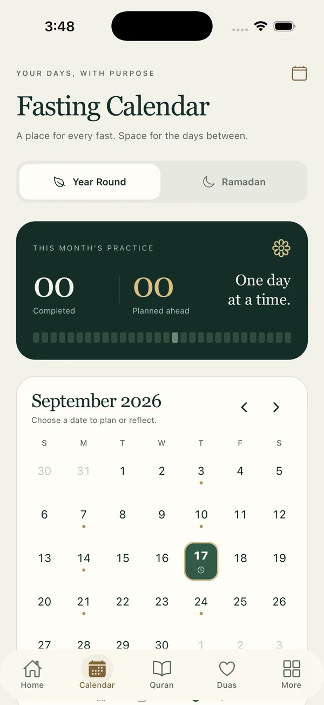

Sunnah fasting
Know when to fast.
The calendar marks the recommended days so you can plan ahead, then keep track of every fast you keep.
- Mondays and Thursdays, the White Days, Ashura, Arafah and six days of Shawwal
- Mark a fast as completed, broken or excused
- Your full Ramadan calendar when the month returns